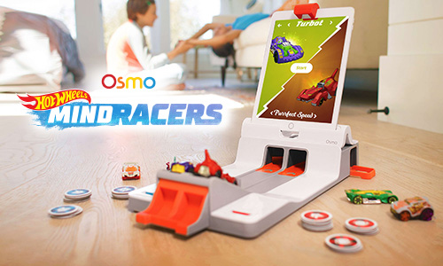
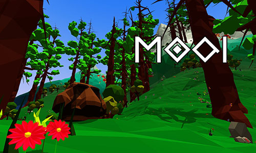
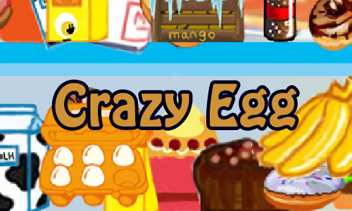
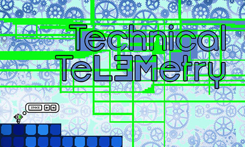
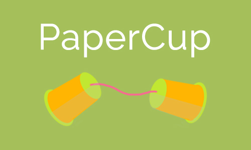
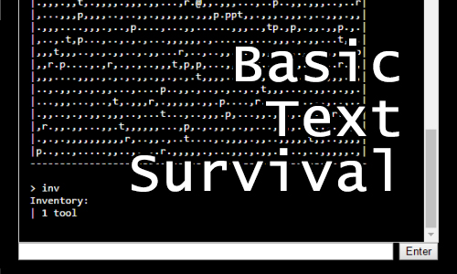
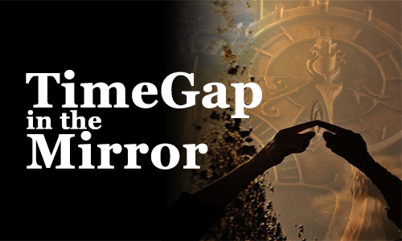
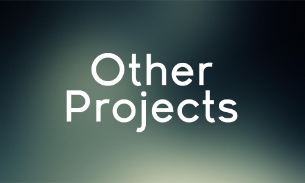

Osmo HotWheels MindRacers: MindRacers is a racing game made for kids on the
Osmo platform. Osmo is an award-winning augmented reality educational kids brand and
game system/platform for iPhone and iPad that focuses on hand-on play. MindRacers is
Osmo's first ever full 3D game as well as their first collaberation with another
brand.

Moai: Moai is a first-person exploration puzzle game where you play as a
stone being with the power of infinite patience. Exploring a low-poly, procedurally
generated world and solving cryptic puzzles is the only way to uncover the secrets
of the strange world you wander in. The game thrives off player curiosity and wonder
in exploring this strange land.

Crazy Egg: A JavaScript 2D point-and-click puzzle game about a crazy egg
named Eggy. Help Eggy avoid dangerous objects that would lead to his untimely demise
by utilizing the environment as he makes his way to freedom so he won't be eaten for
dinner!

Technical TeL3Metry: A puzzle-platformer where you play as the robot L3M, who
has unique abilities which he uses to complete puzzles and tests. L3M has two
abilities: to switch between the machine world and the real world, effectively
flipping positive and negative space, and self-recording, which allows you to record
your movements and play them back as a clone.

PaperCup: A small program where people to watch videos together! Ever want to
watch a movie with someone over long distances? Ever thought that syncing up a movie
by pressing the play button was such a pain and you had to do it again if someone
needed to go use the bathroom? PaperCup is a program that will keep a movie in sync
for you!

Basic Text Survival: A basic survial game is a command line text adventure.
This project was created mainly as a test to see game programming would be like with
different types of programming languages and how each language could handle game
features. Programming languages that were used were JavaScript and Haskell.

TimeGap In The Mirror: A fantasy science fiction text adventure made in
Inform 7 with a mysterious mirror and a handheld time machine. Explore a house with a
mysterious mirror and follow the footsteps of a time traveling test subject that
finds that the future is not what it was thought to be.
For more text adventures, check out
BLINK and
TYPICAL DAY.

Other Projects: Click here to go to my GitHub, which has programming
assignments, miscellaneous projects, and source codes for all projects.